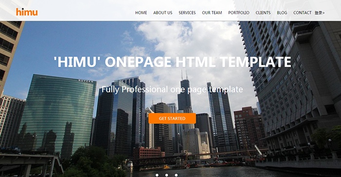

himu-V6.0 王平安
这是一个基于HTML，CSS和jQuery制作的一个网页，含有动画效果，并通过使用AJAX和JSON实现网页的动态交互，其中登录中具有注册登录功能，对数据库已存在的用户名无法再次注册，页面最后编写有留言板功能，您的留言我都看得到呢！
↓↓点击查看

himu-Bootstrap响应式 王平安
这是基于前面的静态页面，修改成Bootstrap响应式网页，实现不同分辨率下内容的完整显示，使用AJAX和JSON实现网页的动态交互，登录中具有注册登录功能，对数据库已存在的用户名无法再次注册，页面最后编写有留言板功能，您的留言我都看得到呢！
↓↓点击查看